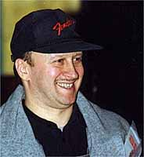
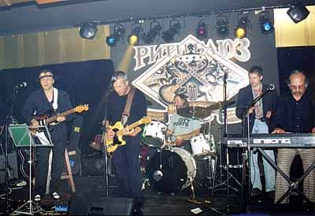

Алексей "ВАЙТ" БЕЛОВ - ЗО ЛЕТ БЛЮЗА
В легендарные времена советского рок-подполья "Удачное приобретение" почиталось как самая высокотехническая (в отношении исполнительского мастерства) группа. И именно благодаря гитаре Алексея Белова, по прозвищу Вайт. Было в ней что-то от Хендрикса, что-то от Уинтера - что-то, чего очень не хватало здесь. Причем, собственно группа с таким названием старше, и "Вайт" играет на гитаре дольше… Но важнейшей точкой отчета в своем творческом пути он сам считает тот момент, когда заиграл именно блюз. С тех пор прошло ровно тридцать лет.

А.БЕЛОВ: Мы вот с Матецким (бывшим бассистом "Удачного приобретения") недавно говорили, мол, 30 лет назад играли то же самое. Но мы находимся в пространстве блюзовой импровизации! Поскольку у нас чаще английского не знают, или не обращают внимания на слова, часто не сама песня важна, а важны чувства, чувства, которые переживает исполнитель, его умение вложить эти сиюминутные чувства в музыку. И важно, насколько на эти чувства откликается слушатель. Один и тот же блюз можно играть каждый день - у настоящего блюзмэна он всегда будет звучать по-разному, поскольку зависит от того, какой выдался день.
В четверг в конце августа, в одном московском "кафе" Вайт сыграл специальный концерт для друзей, посвященный, по его формулировке, "30-летию блюзового исполнительства". Поздравить ветерана и по-блюзовому "поджемовать" пришли лидеры сегодняшнего блюза: Сергей Воронов ("Кроссроадз"), Ливан Ломидзе ("Блюз Казенз"). Очень проникновенно и от души спел "блюз про нашу жизнь" ветеран отечественного блюза Валерий Гелюта. Выходили на сцену и участники "Машины времени": Евгений Моргулис, Андрей Державин - но выходили не на радость любителям блюза. А "Удачное приобретение", под неизменным руководством А.Белова, предстало в расширенном "юбилейном" составе, в котором играли и старые друзья и молодые надежды…
А.БЕЛОВ: Ветеран клавишных: Михаил Ашаницкий - клавиши, Николай Ширяев - бас (экс-"Арсенал"). Барабанщик Андрей Шатуновский… Когда у меня за спиной Андрей, я спокоен. Это один из наиболее популярных барабанщиков на сегодня. Его часто приглашают. Он обладает завидной памятью, ему не надо ничего писать, а тот драйв, которым он обладает выделяет его среди лучших из лучших. Он говорит, ему в кайф поиграть блюз. Я думаю, поскольку по месту основной службы - у А.Б. Пугачевой, ему редко удается что-то в этом роде. Вот новый человек, это Михаил Владимиров, губная гармоника. Совсем молодой музыкант, но его игра среди ветеранов только подчеркивает его достоинства. У него есть музыкальность, чуткость - и он вносит юношеский лиризм. А что касается Андрея, то Макаревич "Машу пальцем не испортит". У него природное чутье, дар от бога - он очень тонко чувствует стилистику блюза. Даже не обладая изощренным арсеналом блюзовой техники, он играет настолько чутко и стильно, что всегда является украшением любого блюз-сейшина со времен 70-х годов. У него есть чувство меры и чувство вкуса. Кстати, когда-то он и играл, и записывался с "Удачным…" на бас-гитаре. И нас предупреждали, что его участие может нам повредить, поскольку "Машина…" считалась подпольной рок-группой. Вот как изменилось время.
Наверное, за это время и блюз изменился?
А.БЕЛОВ: Что мне нравится в блюзе сегодняшнего дня у нас? Мы наконец-то более-менее оснащены. Есть возможность, при желании, играть на хороших инструментах. Есть стильные клубы, где можно провести блюзовую сессию. Когда я начинал, не было ничего подобного. Теперь не выскакивает никакой административный божок, который выставляет свои требования, как надо… Не смотря на элитность стиля, собирается то количество людей, при котором приятно играть. Это говорит о том, что интерес к блюзу не уменьшается, а растет. С другой стороны молодых на концертах не так много. Потому что дешевых блюзовых клубов на сегодня нет. С нетерпением мы ждем, когда же вновь откроется наш первый Арбат-блюз-клуб. "БиБиКинг" очень мал, и администрация этого клуба, на мой взгляд, не способна оплачивать гонорары стильных оркестров. Многие клубы, симпатизирующие блюзу, не могут устраивать встречи тинэйджеров, студентов, людей с малым бюджетом, чтобы знакомить их с блюзом.
Это "бытовая" сторона...
По музыке, блюз сейчас наравне с сохранением традиционной гармонической формы, имеет тенденцию к синтезу, смешиванию чисто блюзовых традиционных форм с наиболее усложненными гармоническими моделями. Скотт Хендерсон, Робин Форд - инициаторы такого синтез-блюз-модерна, который содержит в себе традиционный блюз, блюз-рок и джаз. Большинству современных исполнителей блюза сегодня интересно играть блюз в более усложненной форме, некий "цивилизованный блюз". Когда я играю блюз с Владимировым, он говорит: "мне не интересно играть блюз на три аккорда". Нужно помнить золотое правило блюза - если не соблюсти жестких стилистических рамок, то блюз может исчезнуть, рассыпаться, перейти в модерн какой-то. И тут все зависит от исполнителя: если он способен искусно соединить блюз с инновациями, это правильно, если же это сделано неискусно, не тонко, блюз рассыпается. У него свои тонкие нюансы.
Плести диатонику - это не каждому дано. Некоторые раздражаются, просто не умеют; они просто не чувствуют грани. Тем, кому удается совершать этот синтез - это большое удовольствие от совершенствования игры по блюзовой гармонической сетке.
Да здравствуют традиции! Но все-таки, что нового у тебя?
А.БЕЛОВ: Я поменял концепцию звука, что немаловажный фактор в блюзе, наконец-то я нашел персональную концепцию звука. И считаю это большой победой. В основе - ламповое звучание. Принцип звука - все интервалы звучат отчетливо, не сливаясь. Бороться за каждый звук, отвечать за каждую ноту. Либо отдельно, либо слитно в интервалах… Что я люблю в Хендриксе - он инноватор. Я своей концепции нисколько не изменил и не ухудшил смысл хендриксовского звука. Наоборот, я за то, чтобы присутствовал хендрикс-саунд, но чтобы он звучал более ясно. Эмоциональность, истошность звучания - это присутствует. Мне всегда хотелось, чтобы гитарный голос напоминал истошность звучания человеческого голоса.
Несколько лет назад появился диск "Три Алексея Белова", записаный тобой с гитаристом Алексеем Беловым из группы "Парк Горького" и клавишником Алексеем Беловым-младшим, твоим сыном…
А.БЕЛОВ: Это был специальный проект. Алексей Белов весной принимал участие в большом концерте, посвященном 30-летию "Удачного приобретения", когда на одной сцене выступали все лучшие московские блюзмэны. С Алексеем Беловым-младшим мы тоже время от времени играем вместе, но он основное время отдает группе "Салса бойз", где он играет латиноамериканскую музыку. Он молодой человек, может, ему по темпераменту это сейчас подходит. А времени свободного у него не много. Он закончил музучилище с двумя красными дипломами: как пианист и как звукооператор. А сейчас он студент последнего курса Гуманитарного института ТВ- и Радио-вещания на факультете звукорежиссуры.
А твой выбор - неизменен?
А.БЕЛОВ: Человек, который определился для себя в любви к блюзу, уже никогда не поменяет своей музыкальной ориентации. Блюз можно сравнить с религией, а двум богам не служат. Слушать можно любую музыку, а играть, исполнять… Для того, чтобы исполнять музыку в полном смысле классно, нужно этим заниматься если не всю жизнь, то большую часть, и быть искренне преданным своему жанру. Тогда слушатели поверят, что эта музыка нравится самому исполнителю. Чем искреннее - тем лучше. И для исполнителя, и для аудитории! Блюз к 2000 году - это культура, которую можно назвать классической культурой планеты Земля. И когда говорят порой "давай наше, что вы все чужое играете!", то это говорят люди недалекие. Блюз - это классика ХХ века!

Текст и фото ©Андрей Евдокимов,
"Весь Этот Блюз"
|